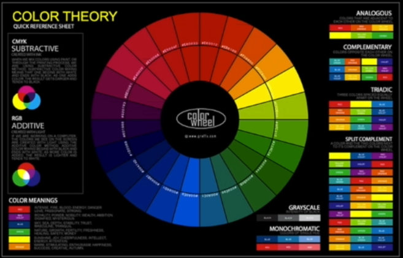

Jump to a section
25 · A Word on Color Theory - and Using Color Correctly
Refined 15 October 2026 from the supplied Joe Natoli course notes. Original wording and captures remain preserved.
Core principle
Evaluate color by its function: hierarchy, consistency, context and accessible communication.
Application to game tools
Use palette tools for exploration, then assign roles and validate actual foreground/background pairs.
Assessment and qualification
The lecturer’s dismissal of color theory is opinion. Art fundamentals are useful here and are explicitly retained in this adaptation.
Try it
What is the purpose of each accent, and does that purpose stay consistent?
Source: 25 A Word on Color Theory - and Using Color Correctly.md
Study detail and teaching translation
The source favors practical communication over elaborate color-theory exercises. Retain that practical focus without dismissing the value of art fundamentals.
A palette does not specify which color belongs to which role. Establish surfaces, text, emphasis and semantic states, then test their actual combinations.
Teaching adaptation: explore options with Coolors, document the chosen roles in the style sheet, and check real text/background pairs rather than judging isolated swatches.
Original captures
